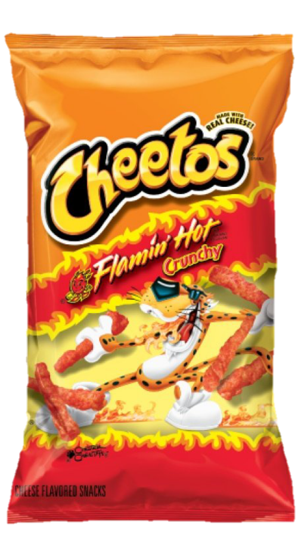

Halloween
This is the Halloween Webpage I promised ❤️ . Here are some movies for us.
Scary
- Talk To Me
- Fnaf
- Insidious Movies
- Us
- Get Out
"Talk to Me" is a 2022 Australian supernatural horror film directed by Danny and Michael Philippou, written by Danny Philippou and Bill Hinzman, and based on a concept by Daley Pearson. The movie stars Sophie Wilde, Alexandra Jensen, Joe Bird, Otis Dhanji, Miranda Otto, Marcus Johnson, Alexandria Steffensen, Zoe Terakes, Chris Alosio, and Ari McCarthy. It follows the story of a grieving young woman who discovers a severed, embalmed hand that can help her connect with the dead. The film has been billed as one of the scariest films of the last decade and has been screened at the 2023 Sundance Film Festival. It is available for streaming, DVD, and BluRay.
Five Nights at Freddy's, a horror film directed by Emma Tammi, has topped the box office for the second weekend in a row, earning $19.4 million in its sophomore outing. The movie follows a troubled security guard who starts working at Freddy Fazbear's Pizza and realizes that the night shift at Freddy's won't be easy to make it through. A making-of book titled The Art and Making of Five Nights at Freddy's: The Movie is expected to release on August 20, 2024, and a film novelization of the movie will also release on December 26, 2023.0 The movie was released in theaters and streaming on Peacock on October 27, 2023.
Insidious is an American horror franchise created by Leigh Whannell and James Wan. The films in the franchise include Insidious (2011), Chapter 2 (2013), Chapter 3 (2015), The Last Key (2018), and The Red Door (2023). The story revolves around a couple whose son enters a comatose state and becomes a vessel for ghosts in an astral plane. The films have grossed over $730 million worldwide on a combined budget of $42.5 million. Insidious premiered at the 2010 Toronto International Film Festival and was released in theaters on April 1, 2011.
"Us" is a 2019 horror movie directed by Jordan Peele, starring Lupita Nyong'o, Winston Duke, Elisabeth Moss, and Tim Heidecker. The movie tells the story of a family's beach vacation that turns into chaos when their doppelgängers appear and begin to terrorize them.
Get Out is a 2017 American psychological horror film written, co-produced, and directed by Jordan Peele in his directorial debut. It stars Daniel Kaluuya, Allison Williams, Lil Rel Howery, LaKeith Stanfield, Bradley Whitford, Caleb Landry Jones, Stephen Root, and Catherine Keener. The plot follows a young black man (Kaluuya), who uncovers shocking secrets when he meets the family of his white girlfriend (Williams).
Romantic
- Corpse Bride
- Warm Bodies
- Edward Scissor Hands
Corpse Bride is a 2005 British-American stop-motion-animated musical fantasy film directed by Mike Johnson and Tim Burton, based on characters created by Burton and Carlos Grangel. The plot is set in a fictional Victorian era village in Europe. Emily is the titular deuteragonist, a reanimated corpse who was a talented and wealthy lady in her lifetime and the self-proclaimed bride of the young Victor Van Dort after their encounter in the woods. Emily was murdered by her ex-fiancé Lord Barkis Bittern and indirectly killed him shortly before gaining her freedom, therefore finally being allowed to enter Heaven. The film is inspired by an Ashkenazi ghost story with tragic connections to real-world events. The original story is based on a story of a living person accidentally marrying the specter of a murdered bride-to-be.
A terrible plague has left the planet's population divided between zombies and humans. An unusual zombie named R (Nicholas Hoult) sees his walking-dead brethren attacking a living woman named Julie (Teresa Palmer) and rescues her. Julie sees that R is different from the other zombies, and the pair embark on an unusual relationship.
"Edward Scissorhands" is a 1990 American fantasy gothic romance film directed by Tim Burton, starring Johnny Depp, Winona Ryder, Dianne Wiest, Anthony Michael Hall, Kathy Baker, Vincent Price, and Alan Arkin. It tells the story of Edward, an artificial humanoid with scissors for hands, who is taken in by a suburban family. The film is a convincingly detailed left-of-center fairytale romance that abandons the slight characterizations and special effects-driven spectacle of "Batman" and serves up a convincingly detailed left-of-center fairytale romance. The film was shot with the typical Burton energy and precision, and two particular sequences that are visually memorable are Edward's B&E and his ice sculpture scene when Kim dances under the ice flakes.
Snacks
| Spicy | Sweet |
|---|---|
|
Turbos |
Oreos |
|
Hot Cheetos  |
Sweet Tarts |
|
Doritos Dynamite |
Ice Cream Milk Shake |
|
Spicy Peach Rings |
Boli Rompope Flavor |
|
Hot Fries |
Chocolate Covered Pretzels 
|